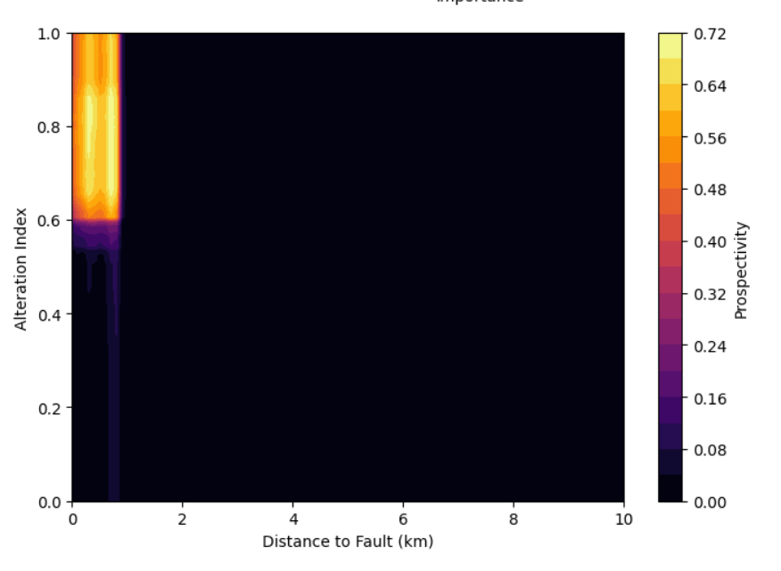
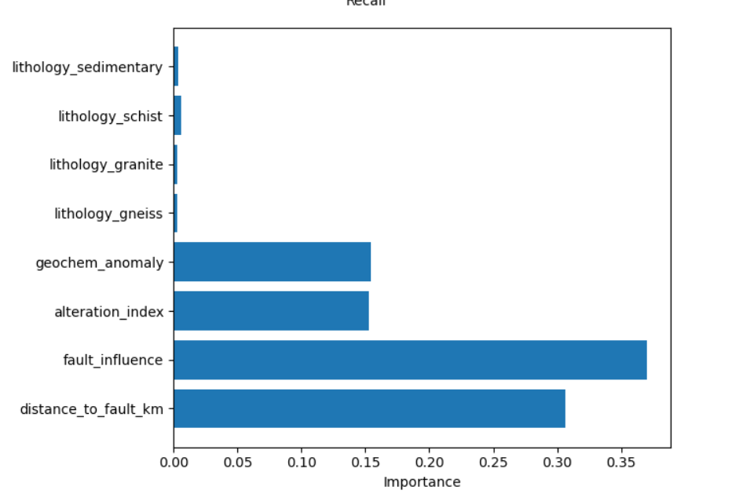
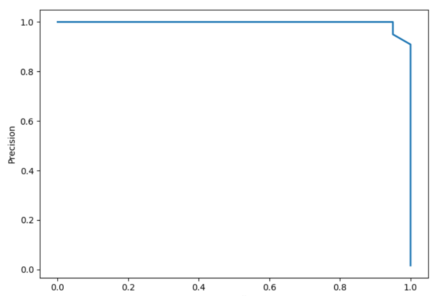

Machine Learning • Economic Geology • Mineral Exploration
This GeoAI project demonstrates how geological indicators such as structural proximity, alteration intensity, and geochemical anomalies can be integrated with machine learning models to highlight potential mineral prospectivity zones.



• Geological feature simulation • Structural proximity analysis • Random Forest classification • Mineral prospectivity visualization